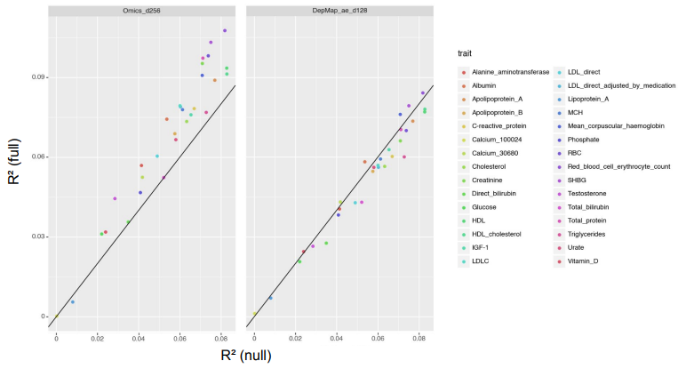
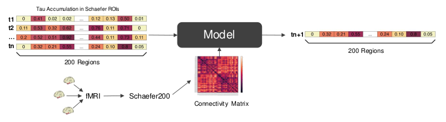
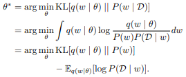
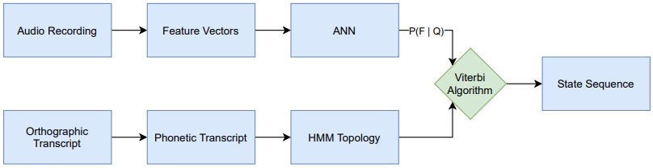
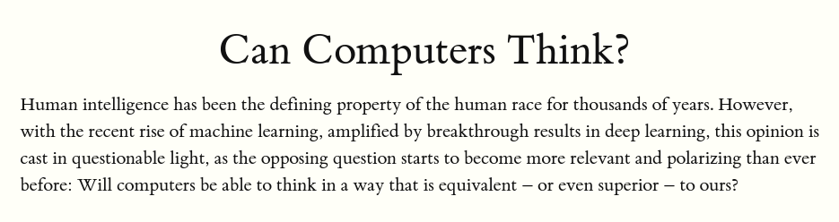
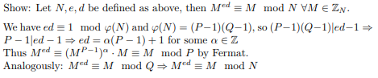
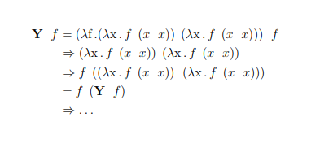

Niklas Bühler
Escaping local optima on a random walk through life.
Table of Contents
- 🎓 Academic Publications
- 🧬 Functional Gene Embeddings
- 🧠 Connectome Informed Attention
- 🧊 Bayesian Deep Learning – A Stochastic Dynamics Perspective
- 🧬 Interpretable Mechanistic Models for Predicting Tissue-specific RBP Expression
- 🌆 Case Study – Life Expectancy in Barcelona
- 🧮 Formalism 101
- 🗣️ Crosslingual, Language-independent Phoneme Alignment
- 🤖 Can Computers Think?
- 🔏 Security Review
- 🍛 Cooking With Curry: Lambda Poetry
- 🌐 Graph Theory Review
- ♾️ Mächtigkeiten, Kardinalzahlen und die Kontinuumshypothese
- 🧫 Computation and Pattern Formation by Swarm Networks with Brownian Motion
🎓 Academic Publications
🧬 Functional Gene Embeddings

Functional gene embeddings, numerical vectors capturing gene functions, can provide useful representations of genes for downstream analyses. In this project, we extracted functional gene embeddings from transcription data and other genomewide measurements by using principle components, autoencoders and a Variational Deep Tensor Factorization model. We used these embeddings, as well as embeddings from other publications, as gene features in the prediction of genome-wide association study summary statistics for a diverse set of traits and compared their performances.
🧠 Connectome Informed Attention

We predict tau spreading behavior for Altzheimer’s patients, based on a connectivity map and tau PET scans of the brain.
- Initial Presentation
- Second Presentation
- Third Presentation
- Fourth Presentation
- Fifth Presentation
- Sixth Presentation
- Final Poster
- Github Repository
🧊 Bayesian Deep Learning – A Stochastic Dynamics Perspective

This report gives an overview of Bayesian deep learning from a stochastic dynamics perspective by first introducing Bayesian deep learning as well as two important methods for training Bayesian neural networks, and then building upon this fundament by presenting various approaches and variations inspired by stochastic dynamics.
🧬 Interpretable Mechanistic Models for Predicting Tissue-specific RBP Expression
🌆 Case Study – Life Expectancy in Barcelona
A short case study on what factors might influence life expectancy in the city of Barcelona.
🧮 Formalism 101
🗣️ Crosslingual, Language-independent Phoneme Alignment

The goal of this thesis is to apply cross-lingual, multilingual techniques on the task of phoneme alignment, i.e. the task of temporally aligning a phonetic transcript to its corresponding audio recording. Three different neural network architectures are trained on a multilingual data set and utilized as a source of emission probabilities in hybrid HMM/ANN systems. These HMM/ANN systems enable the computation of phoneme alignments via the Viterbi algorithm. By iterating this process, multilingual acoustic models are bootstrapped and the resulting systems are used to cross-lingually align data from a previously unseen target language.
🤖 Can Computers Think?

Human intelligence has been the defining property of the human race for thousands of years. However, with the recent rise of machine learning, amplified by breakthrough results in deep learning, this opinion is cast in questionable light, as the opposing question starts to become more relevant and polarizing than ever before: Will computers be able to think in a way that is equivalent – or even superior – to ours?
🔏 Security Review

A review of the most important definitions and results of the Security lecture given at KIT.
🍛 Cooking With Curry: Lambda Poetry

The lambda calculus is a formal system that is used to express computations. Like the Turing machine, it’s a universal model of computation, however it’s much simpler and more elegant than those bulky machines. The following pages are filled with fundamental datastructures and the most important functions operating on them, in the untyped lambda calculus. The datastructures presented differ from ordinary, imperative datastructures, as they are purely functional. That means they don’t describe where and how the data is stored, but rather how functions are applied to that data. Variable names are often chosen as a hint on the value they’re holding, but aren’t elaborated on. Their exact purpose and meaning is left open for exploration.